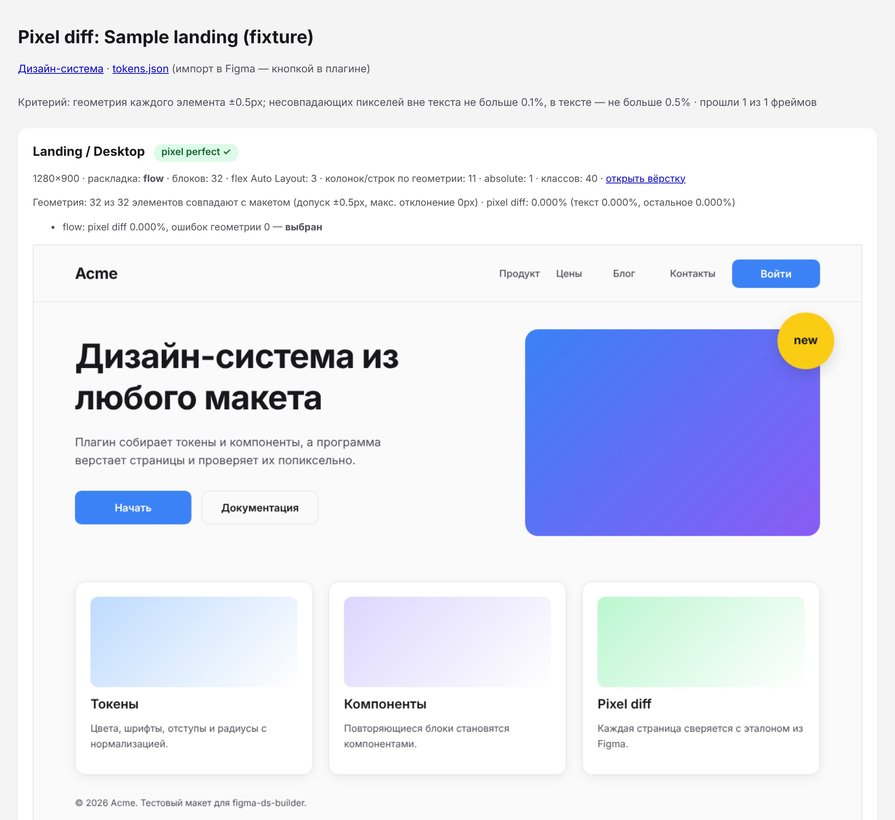

Figma → дизайн-система → вёрстка
Вёрстка, которая совпадает с макетом
Плагин выгружает макеты из Figma. Платформа на вашем компьютере строит из них дизайн-систему, верстает страницы и сверяет каждую с эталоном из Figma — по положению каждого элемента и попиксельно. Работает и на «грязных» макетах: без стилей, компонентов и Auto Layout.

pixel perfect ✓ геометрия 32/32 · diff 0.000%Как это работает
Плагин выгружает. Платформа делает всё остальное.
Плагин ничего не решает за вёрстку — он отдаёт полные данные из Figma. Анализ, вёрстка, сравнение и доработка выполняются локально, макеты никуда не отправляются.
01 · Figma
Плагин выгружает пакет
Одна кнопка — и zip со всем, что нужно для вёрстки:
- PNG каждого макета — эталон для сравнения
- дерево слоёв: координаты, заливки, тени, Auto Layout, тексты
- векторы в SVG, картинки
- шрифты, переменные и стили файла
02 · Ваш компьютер
Платформа верстает и проверяет
Одна команда ds-build build:
- строит дизайн-систему: токены, семантика, шкалы, аудит
- верстает каждый макет на этих токенах
- рендерит в Chrome и сверяет с эталоном
- сама дорабатывает места с расхождениями
03 · Результат
Вёрстка, отчёт и токены
На выходе — то, с чем можно работать дальше:
- HTML/CSS каждой страницы
- отчёт: прошло / не прошло, наложение, карта различий
- tokens.json, CSS, SCSS, Tailwind-конфиг
- переменные и стили обратно в Figma — кнопкой в плагине
Возможности
Что делает платформа
Дизайн-система из любого макета
Почти одинаковые цвета склеиваются по ΔE2000, получают имена по шкале 50–950 и роли: фон, поверхность, текст, граница, фирменный. Стили текста h1…body, шаг отступов, радиусы, тени, брейкпоинты.
Вёрстка без «абсолюта»
Auto Layout переносится во flex один к одному. Где его нет, колонки и строки определяются по расположению слоёв. position: absolute — только там, где слои действительно перекрываются.
Проверка с эталоном
Каждый элемент вёрстки измеряется в браузере и сверяется со своим слоем в Figma. Скриншот страницы сравнивается с PNG из Figma, расхождения раскладываются по слоям.
Автодоработка
Для слоёв с наибольшим расхождением программа подбирает поправки — интервалы и положение строк текста — и оставляет только те, что приближают к эталону. На реальных макетах: 1.98% → 0.38%.
Отчёт, который видно
По каждой странице: прошла ли проверку, наложение «макет / вёрстка» с ползунком, карта различий, какие слои дают расхождение. Плюс аудит контраста текста по WCAG.
Обратно в Figma
Токены платформы импортируются в Figma кнопкой: коллекции переменных Primitives, Semantic, Typography, текстовые стили и стили теней. Повторный импорт обновляет, а не дублирует.
Критерий качества
Что значит «pixel perfect»
Страница считается готовой, только если прошла обе проверки. Это не обещание, а цифры в отчёте по каждой странице.
±0.5px
Геометрия
Каждый элемент вёрстки связан со своим слоем Figma (data-figma-id) и совпадает с ним по x, y, ширине и высоте. Ловит ошибки раскладки даже в 1px и не зависит от того, как браузер рисует шрифты.
0.1% / 0.5%
Пиксели
Скриншот против PNG из Figma: вне текста — не больше 0.1% несовпадающих пикселей (цвета, фигуры, тени, картинки), в тексте — не больше 0.5%. Пороги настраиваются.
Почему для текста отдельный допуск: Figma и браузер по-разному растеризуют пары букв, полностью это не устраняется. Сдвиг текстового блока при этом не прячется — его ловит геометрия, а автодоработка возвращает строку на место.
Установка
Один раз, пять минут
Скачайте и подготовьте
Установит зависимости программы и соберёт плагин.
git clone https://github.com/nurgeldiserikbay/figma-ds-builder
cd figma-ds-builder
npm run setupПодключите плагин в Figma
Figma Desktop → Plugins → Development → Import plugin from manifest… → файл packages/plugin/dist/manifest.json. Плагин появится как «DS Builder — экспорт для вёрстки».
Локальные плагины работают только в приложении Figma для компьютера, не в браузере.
Проверьте, что всё на месте
Необязательно: тесты программы и плагина на встроенном макете, около минуты.
npm testКак работать
От макета до проверенной вёрстки
Выгрузите макеты из Figma
Запустите плагин, выберите область — выделенные фреймы, страницу или весь файл, масштаб 1× — и нажмите «Пакет для вёрстки». Скачается <файл> — ds-package.zip.
Нужны только картинки для скриншот-тестов — кнопка «Только PNG макетов».
Соберите и проверьте
Шрифты макета скачаются сами (бесплатные Google Fonts), построится дизайн-система, каждый макет будет свёрстан и сверен с эталоном. По окончании откроется отчёт.
npm run ds -- build "<файл> — ds-package.zip" --out out/my-site --openПосмотрите отчёт и вёрстку
В out/my-site/report.html — статус каждой страницы, наложение эталона и вёрстки, источники расхождений. Сама вёрстка — out/my-site/<фрейм>/index.html, обычный HTML/CSS. Дизайн-система — в out/my-site/design-system/.
# только дизайн-система, без вёрстки
npm run ds -- analyze "<файл> — ds-package.zip" --out out/dsВерните дизайн-систему в Figma
В плагине, блок «Дизайн-система → Figma»: выберите design-system/tokens.json → «Создать переменные и стили». Появятся переменные DS · Primitives / Semantic / Typography, текстовые стили и стили теней.
Проверено на открытых макетах
Результаты
5 открытых Figma-файлов с GitHub, 14 фреймов, около 1 300 слоёв. Для двух фреймов у авторов были PNG-экспорты из Figma — настоящие эталоны.
| Макет | Размер | Слоёв | Геометрия ±0.5px | Pixel diff: до → после автодоработки | Итог |
|---|---|---|---|---|---|
| HackRPI, страница «спасибо» v2.1 — без Auto Layout | 1440×1024 | 28 | 28/28 | 1.977% → 0.381% | ✓ |
| HackRPI, страница «спасибо» v3 | 1440×1970 | 35 | 35/35 | 1.679% → 0.209% | ✓ |
| Physionic, сайт клиники — Desktop | 1440×5007 | 446 | 446/446 | нет эталона | ✓ |
| Physionic — Mobile | 414×9806 | 423 | 423/423 | нет эталона | ✓ |
| Physionic — обзорная страница | 2624×2391 | 497 | 497/497 | нет эталона | ✓ |
| HackRPI — мокап Discord, команда, практика (7 фреймов) | 360–1680 | 2–45 | все | нет эталона | ✓ |
Дизайн-система шаблона Physionic, построенная по макету, совпала с SCSS-переменными автора в 14 из 14 проверок: фон, поверхность, оба цвета текста, акцент, палитра и шаг отступов 5. Подробности и история итераций — docs/benchmark.md; повторить прогон — npm run bench.
Принципы
На чём держится продукт
Сначала алгоритм
Всё, что решается детерминированно — раскладка, токены, сравнение, подбор поправок — делается кодом: повторяемо, бесплатно, проверяемо. ИИ подключается только для задач «на понимание», и его результат проходит ту же проверку с откатом.
Плагин только выгружает
Плагин отдаёт полные данные из Figma и записывает обратно то, что построила платформа. Вся логика — в платформе, где её можно тестировать и запускать без Figma.
Готово = прошло проверку
Страница не считается готовой без сверки с эталоном из Figma. Что не прошло — видно в отчёте вместе с причиной.
Пока не умеет
- Повёрнутые слои, маски и сложные булевы операции верстаются приближённо.
- Компоненты выделяются как общие CSS-классы, без отдельных файлов React/Vue.
- Нет адаптивности между брейкпоинтами: каждый макет верстается под свою ширину.
- Платные шрифты нужно установить в систему самому.
- Плагин проверен на имитации Figma API — первый запуск в настоящей Figma впереди.
Дальше по плану
- Прогон на реальных рабочих макетах, уточнение порогов.
- Точечный запасной режим: absolute только для узла с расхождением.
- Компоненты в отдельные файлы, затем React/Vue.
- ИИ-слой: семантические теги, имена классов, адаптивность — сначала локальная модель, затем бесплатные API.
- Адаптивность по фреймам desktop / tablet / mobile одной страницы.
Вопросы
Частые вопросы
Макеты куда-то отправляются?
Нет. Плагин не ходит в сеть, а платформа работает на вашем компьютере. Из интернета скачиваются только бесплатные шрифты из npm — один раз, в локальный кэш.
Нужен ли ИИ или платные сервисы?
Нет. Сейчас в проекте нет ни одного вызова ИИ — анализ, вёрстка, проверка и доработка работают на алгоритмах. Когда появится ИИ-слой, порядок будет такой: локальная модель → бесплатные API → платные только по явному флагу.
Что если макет сделан без стилей и Auto Layout?
Это основной сценарий. Дизайн-система собирается из фактически использованных значений, а раскладка определяется по расположению слоёв. Масштабированные копии экранов распознаются и не засоряют шкалы.
Почему нужен Chrome?
Вёрстка проверяется в настоящем браузере: страница рендерится в Chrome, каждый элемент измеряется, скриншот сравнивается с эталоном. Отдельно скачивать браузер не нужно — используется установленный. Если он в нестандартном месте, путь задаётся переменной CHROME_PATH.
Можно ли без Figma?
Для проверки алгоритмов — да: packages/bench собирает пакет прямо из файла .fig. Но эталоны PNG и полные данные даёт только плагин в Figma.
Что-то не сработало — что прислать?
Текст ошибки из терминала, консоль плагина (Plugins → Development → Show/Hide console), report.json и, если можно, сам пакет или один проблемный фрейм из него.
Проверьте на своём макете
Установка, выгрузка, вёрстка и отчёт — за 10–15 минут.